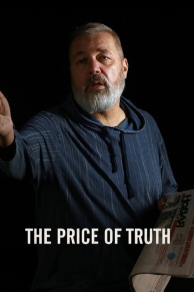

Welcome to Chechnya: Inside The Russian Republic’s Deadly War On Gays
Directed by Welcome to Chechnya
USA · 2020 · 107 min
About the film
Welcome to Chechnya: Inside The Russian Republic’s Deadly War On Gays
David France
Welcome to Chechnya
shadows a group of brave activists risking their lives to confront the ongoing anti-LGBTQ campaign in the Russian republic of Chechnya. With unfettered access and a commitment to protecting anonymity, this documentary from Academy nominated filmmaker, David France, exposes these underreported atrocities, while highlighting an extraordinary group of people confronting deadly brutality. A pre-recorded, post screening discussion with filmmaker David France and producer Askold Kurov, moderated by David Scott, will be available in addition to the film.
At the festival
More films on these topics
- An Unknown SubstanceSteven Leckart · Maia Wikler2026 · 39 min
- Short Strand: Against the GrainSteven Leckart · Maia Wikler2026
- Short Strand: Minneapolis: On the Record + A Special ScreeningLaura Poitras, Rachel Lauren Mueller · Anne Sundberg · Yoruba Richen, Christalyn Hampton2026
 The Oligarch and the Art DealerAndreas Dalsgaard2026 · 120 min
The Oligarch and the Art DealerAndreas Dalsgaard2026 · 120 min
The Price of Truth, Director’s CutPatrick Forbes2023 · 85 min- 23Milan M.A. Gonzales2023 · 10 min